건축기사 (2009-03-01 기출문제)
1과목: 건축계획
1. 다음의 도서관 건축계획에 대한 설명중 옳지 않은 것은?
- 대지조건과 도서관의 내부기능의 관계를 검토하여 출입구의 배치 장소를 결정한다.
- 증축예정지는 기능적 긴밀성의 유지를 위해 도서관의 평면구성보다는 단면구성을 고려하여 계획한다.
- 도서관의 신축시에는 대지선정과 배치단계에서부터 장래의 성장에 따른 증축 가능한 공간을 확보할 필요가 있다.
- 도서관의 각 구성요소의 조합에 따은 평면형식 중 서고식의 경우, 서고와 열람실은 제각기 독립된 방향의 확장을 고려한다.
(정답률: 77%)

2. 다음의 객석의 가시거리에 대한 설명 중 ( )안에 알맞은 내용은?
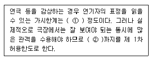
- ① 10m, ②22m
- ① 15m, ②22m
- ① 10m, ②25m
- ① 15m, ②25m
(정답률: 88%)
3. 일반주택의 동선계획에 관한 설명 중 옳지 않은 것은?
- 동선이 가지는 요소는 속도, 빈도, 하중의 3가지가 있다.
- 동선에는 공간이 필요하고 가구를 둘 수 없다.
- 하중이 큰 가사노동의 동선은 길게 나타낸다.
- 개인, 사회, 가사노동권의 3개 동선이 서로 분리되어야 바람직하다.
(정답률: 83%)
4. 다음 중 백화점 기둥간격의 결정요소와 거리가 먼 것은?
- 지하주차장의 주차방법
- 진열대의 치수와 배열법
- 엘리베이터의 배치 방법
- 각 층별 매장의 상품구성
(정답률: 75%)
5. 고대 로마 건축에 대한 설명 중 옳지 않은 것은?
- 바실리카 울피카는 황제를 위한 신전으로 배럴 볼트가 사용되었다.
- 판테온은 거대한 돔을 얹은 로툰다와 대형 열주 현관이라는 두 주된 구성요소로 이루어진다.
- 콜로세움의 1층에는 도릭 오더가 사용되었다.
- 인술라(insula)는 다층의 집합주거 건물이다.
(정답률: 62%)
6. 호텔의 퍼블릭 스페이스(public space) 계획에 대한 설명 중 옳지 않은 것은?
- 프론트 오피스는 기계화된 설비보다는 많은 사람을 고용함으로서 고객의 편의와 능률을 높여야 한다.
- 프론트 데스크 후방에 프론트 오피스를 연속시킨다.
- 로비는 개방성과 다른 공간과의 연계성이 중요하다.
- 주식당은 외래객이 편리하게 이용할 수 있도록 출입구를 별도로 설치한다.
(정답률: 79%)
7. 전시실의 순회형식 중 중앙홀 형식의 가장 큰 단점은?
- 출입동선
- 자연채광
- 장래확장
- 부지이용
(정답률: 77%)
8. 병원의 공조 설계시 가장 중요도가 높은 곳은?
- 간호사 대기
- 병실
- 환자 식당
- 수술실
(정답률: 68%)
9. 다음 중 상점계획에서 피사드 구성에 요구되는 소비자 구매심리 5단계에 속하지 않는 것은?
- 흥미(interest)
- 욕망(desire)
- 기억(memory)
- 유인(attraction)
(정답률: 83%)
10. 주거단지의 교통계획시 각 도로에 대한 설명 중 틀린 것은?
- 격자형 도로는 교통을 균등 분산시키고 넓은 지역을 서비스 할 수 있다.
- 선형도로는 폭이 넓은 단지에 유리하고 한쪽 측면의 단지만을 서비스 할 수 있다.
- 쿨드삭(Cul-de-sac)은 차량의 흐름을 주변으로 한정하여 서로 연결하며 차량과 보행자를 분리할 수 있다.
- 단지 순환로가 단지 주변에 분포하는 경우 최소한 4~5m 정도 완충지를 두고 식재하는 것이 좋다.
(정답률: 73%)
11. 다음의 설명에 알맞은 학교운영방식은?
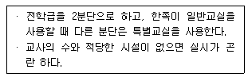
- 교과교실형(department system)
- 플래톤형(platon type)
- 달톤형(dalton type)
- 개방학교(open school)
(정답률: 79%)
12. 다음 중 르 꼬르뷔제의 작품이 아닌 것은?
- 빌라로툰다
- 빌라 라 로슈
- 빌라사보아
- 롤샹 성당
(정답률: 54%)
13. 은행 건축계획에 대한 다음 설명 중 옳지 않은 것은?
- 고객의 동선은 주로 창구 위치에 따라 결정한다.
- 출입구에 전실을 둘 경우 전실의 외부문은 안여닫이문, 내부문은 밖여닫이문이나 회전문으로 하는 것이 좋다.
- 영업카운터는 고객과 은행원의 업무기능이 함께 이루어지는 공간으로 인간공학적인 배려가 요구된다.
- 자동화 서비스 공간은 객장의 일반 고객 동선과 분리하여 설치하는 것이 일반적이다.
(정답률: 80%)
14. 다음 중 주거공간의 효율을 높이고, 데드 스페이스(dead space)를 줄이는 방법과 가장 거리가 먼 것은?
- 기능과 목적에 따라 독립 된 실로 계획한다.
- 유닛 가구를 활용한다.
- 가구와 공간의 치수 체계를 통합한다.
- 침대, 계단 밑 등을 수납공간으로 활용한다.
(정답률: 80%)
15. 병원 건축의 외과 수술실 계획에 대한 설명 중 옳지 않은 것은?
- 수술실 바닥은 전기도체성 마감으로 한다.
- 외래와 병동 중간 부분에 위치하도록 한다.
- 사용이 편리하도록 통과 교통로에 인접시켜 설치한다.
- 실내 벽재료는 녹색계통으로 마감을 한다.
(정답률: 73%)
16. 미술관 건축계획에 대한 다음 설명 중 옳은 것은?
- 하모니카 전시기법은 동일 종류의 전시물을 반복 전시할 경우 유리하다.
- 대규모의 미술관은 각 전시실을 자유롭게 출입할 수 있는 연속형식을 주로 채용한다
- 미술관의 채광 방식을 편측창 방식으로 할 경우 실 전체의조도분포가 균일하여 별도의 조명 설비가 필요하다.
- 아일랜드 전시기법은 벽이나 천장을 직접 이용하여 전시물을 배치하는 기법으로 관람자의 시거리를 짧게 할 수 없다는 단점이 있다.
(정답률: 65%)
17. 다음 중 시기적으로 가장 최근인 것은?
- 아르 누보(Art-Nouveau)
- 세졔손(Secession)
- 포스트 모더니즘(Post Modernism)
- 바우하우스(Bauhaus)
(정답률: 67%)
18. 주거단지내의 공동시설에 대한 설명 중 옳지 않은 것은?
- 이용 빈도가 높은 건물은 이용거리를 길게 한다.
- 중심을 형성할 수 있는 곳에 설치 한다.
- 이용성, 기능상의 인접성, 토지이용의 효율성에 따라 인접하여 배치한다.
- 인접하여 배치한다.
(정답률: 88%)
19. 학교건축의 세부계획에 대한 설명 중 옳지 않은 것은?
- 미술실은 반드시 북측채광을 고집할 필요는 없고 고른 조도를 얻을 수 있으면 된다.
- 초등학교 강당의 학생1인당 소요면적은 0.4m2정도이다.
- 시청각관계 제실은 일반교실, 특별교실 등에 가까운 것이 좋으며 관리부문과도 인접하여 배치한다.
- 체육관은 배구코트를 둘 수 있는 크기가 필요하며 그러기 위해서는 최소 300m2의 면적이 필요하다.
(정답률: 82%)
20. 다음 중 계획시 자연채광이 주요한 고려사항이 되지 않는 것은?
- 사무소 사무실
- 학교 교실
- 병원 병실
- 백화점 매장
(정답률: 84%)
2과목: 건축시공
21. 다음 중 판 유리에 대한 설명으로 옳지 않은 것은?
- 망입유리는 차손되더라도 파편이 튀지 않으므로 진동에 의해 파손되기 쉬운 곳에 사용된다.
- 복층유리는 단열 및 차음성이 좋지 않아 주로 선박의 창 등에 이용된다.
- 강화유리는 압축강도를 한층 강화한 유리로 현장 가공 및 절단이 되지 않는다.
- 자외선 투과유리는 병원이나 온실 등에 이용된다.
(정답률: 78%)
22. 다음 중 프리팩트 콘크리트 공사에 대한 설명으로 옳지 않은 것은?
- 모르타르 믹서는 균일하고 소요의 품질을 갖는 주입 모르타르를 5분 이내에 비빌 수 있는 것으로 한다.
- 굵은 골재는 최소치수가 15mm이상의 것으로 한다.
- 상부에 수평에 가까운 거푸집을 설치할 때에는 필요한 부분에 통기공을 만든다.
- 주입 모르타르의 블리딩률은 7%이하로 한다.
(정답률: 48%)
23. 타일공사의 외벽 떠붙임공법에 대한 설명으로 옳지 않은 것은?
- 건비빔한 모르타르는 3시간 이내에 가수한 비빔모르타르는 적어도 1시간 이내에 사용하는 것이 좋다.
- 굵은 골재는 최소치수가 15mm이상의 것으로 한다.
- 타일의 1일 붙임 높이의 한도는 1.5m 정도로 하며 타일붙임면이 풍우 등에 의해 손상 우려가 크면 시트등으로 보양한다.
- 흡수성이 있는 타일에는 백화, 탈락등의 결함을 방지하기 위해 물을 접촉시켜 사용하면 안된다.
(정답률: 46%)
24. 콘크리트용 골재로서 요구되는 성질에 대해 설명한 것으로 옳지 않은 것은?
- 콘크리트의 입형은 가능한 한 편평, 세장하지 않을 것
- 골재의 강도는 경화시멘트페이스트의 강도를 초과하지 않을 것
- 입도는 조립에서 세립까지 연속적으로 균등히 혼합되어 있을 것
- 골재는 시멘트페이스트와의 부착이 강한 표면구조를 가져야 할 것
(정답률: 53%)
25. 다음 미장재료 중 기경성 재료로만 짝지어진 것은?
- 회반죽, 석고 플라스터, 돌도마이트 플라스터
- 시멘트 모르타르, 석고 플라스터, 회반죽
- 석고 플라스터, 돌도마이트 플라스터, 진흙
- 진흙, 회반죽, 돌도마이트 플라스터
(정답률: 69%)
26. 다음 중 스틸 샤시를 양면칠을 할 경우 소요면적 계산으로 적절한 것은? (단, 뭍틀·창선반 포함)
- 안목면적의 1배
- 안목면적의 1.2 ~ 1.4배
- 안목면적의 1.6 ~ 2.0배
- 안목면적의 2.1 ~ 2.5배
(정답률: 48%)
27. TQC를 위한 7가지 도구 중 다음 설명이 의미하는 것은?
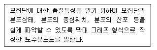
- 히스토그램
- 특성요인도
- 파레토도
- 체크시트
(정답률: 74%)
28. 다음 중 플라이애쉬를 콘크리트에 사용함으로써 얻을 수 있는 장점에 해당되지 않는 것은?
- 워커빌리티가 개선된다
- 건조수축이 적어진다.
- 초기강도가 높아진다.
- 수화열이 낮아진다.
(정답률: 71%)
29. 토질 및 암의 분류에서 다음 설명에 해당하는 것은?
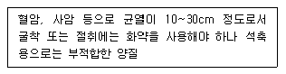
- 풍화암
- 연암
- 경암
- 보통암
(정답률: 70%)
30. 지름 100mm, 높이 200mm인 원주 공시체로 콘크리트의 압축강도를 시험하였더니 250kN에서 파괴되었다면 이 콘크리트의 압축강도는?
- 25.4MPa
- 28.5MPa
- 31.8MPa
- 34.2MPa
(정답률: 60%)
31. 다음 중 지하연속벽 공법(Slurry Wall)에 대한 설명으로 옳지 않은 것은?
- 저진동 · 저소음으로 공사가 가능하다.
- 깊은 기초로 활용하기에는 부적절하다.
- 통상적인 흙막이 공사와 비교하면 대체로 공사비가 높다.
- 벽체의 강성이 높다.
(정답률: 72%)
32. 다음 중 철근콘크리트구조의 철근공사와 관련된 내용으로 옳지 않은 것은?
- 기둥의 주근은 기초에, 바닥철근은 보 또는 벽체에 정착시킨다.
- 기둥에서의 철근 피복두께는 콘크리트 표면에서 기둥주철근 표면까지의 길이이다.
- 복원중(정확한 내용을 아시는분 께서는 오류신고를 통하여 작성부탁 드립니다.)
- 복원중(정확한 내용을 아시는분 께서는 오류신고를 통하여 작성부탁 드립니다.)
(정답률: 71%)
33. 다음 중 굳지 않은 콘크리트의 성질에 관한 내용으로 옳지 않은 것은?
- 시멘트는 분말도가 높아질수록 점성이 높아지므로 컨시스턴시도 커진다.
- 사용되는 단위수량이 많을수록 콘크리트의 컨시스턴시는 커진다.
- 입형이 둥글둥글한 강모래를 사용하는 것이 모가진 부순모래의 경우보다 워커빌리티가 좋다.
- 비빔시간이 너무 길면 수화작용을 촉진시켜 워커빌리티가 나빠진다.
(정답률: 58%)
34. 굵은 골재의 최대치수가 40mm일 경우, 콘크리트 펌프 압송관의 최소 호칭지수로 가장 적당한 것은?
- 50mm
- 75mm
- 100mm
- 125mm
(정답률: 58%)
35. 다음 중 웰포인트 공법에 대한 설명으로 옳지 않은 것은?
- 흙파기 밑면의 토질약화를 예방한다.
- 진공펌프를 사용하여 토중의 지하수를 강제적으로 집수한다.
- 지하수 저하에 따른 인접지반과 공동매설물 침하에 주의가 필요하다.
- 사질지반보다 점토층 지반에서 효과적이다.
(정답률: 73%)
36. 다음 중 철골공사에 사용되는 공구가 아닌 것은?
- 턴버클(turn buckle)
- 리머(reamer)
- 임팩트랜치(impact wrench)
- 세퍼레이터(separator)
(정답률: 78%)
37. 바깥방수와 비교한 안방수의 특징에 관한 설명으로 옳지 않은 것은?
- 공사가 간단하다.
- 공사비가 비교적 싸다.
- 보호누름이 없어도 무방하다.
- 수압이 작은 곳에 이용된다.
(정답률: 77%)
38. 철골공사의 용접 결함의 종류 중 아래의 그림에 해당하는 것은?
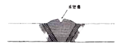
- 언더컷(under cut)
- 피트(pit)
- 오버랩(over lap)
- 슬래그 섞임(slag inclusion)
(정답률: 68%)
39. 흙막이 설계시 고려하는 측압계수는 지하수위에 따라 변화 하는데, 다음 중 단단한 점토의 측압계수(K)로 옳은 것은?
- 0.2~0.5
- 0.6~0.8
- 0.9~1.1
- 1.2~1.4
(정답률: 34%)
40. 건축공사시 견적방법 중 가장 적확한 공사비의 산출이 가능한 견적방법은?
- 명세견적
- 계산견적
- 입찰견적
- 실행견적
(정답률: 79%)
3과목: 건축구조
41. 다음 중 부동침하를 방지하기 위한 대책과 가장 거리가 먼 것은?
- 구조물의 하중을 기초에 균등하게 분포시킨다.
- 필요시 복합기초를 사용한다.
- 기초상호간을 지중보로 연결한다.
- 건물의 길이를 길게 한다.
(정답률: 81%)
42. 그림의 보에서 최대휨모멘트가 생기는 위치는 지점 A로부터 얼마 떨어진 곳인가?
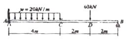
- 2m
- 2.45m
- 3.75m
- 6m
(정답률: 52%)
43. 다음 그림과 같은 단순보의 일부 구간으로부터 떼어낸 자유물체도에서 각 번호에 해당하는 좌우 측면의 전단력의 방향과 그 값으로 옳은 것은?
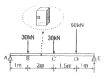
- ① : 19.09kN(↑), ② : 19.09kN(↓)
- ① : 19.09kN(↓), ② : 19.09kN(↑)
- ① : 16.09kN(↑), ② : 16.09kN(↓)
- ① : 16.09kN(↓), ② : 16.09kN(↑)
(정답률: 63%)
44. 그림과 같은 단순보의 양지점에 모멘트 M이 작용할 때 A지점의 처짐각은?
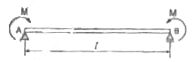
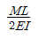
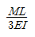
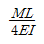
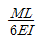
(정답률: 49%)
45. 다음 그림과 같은 트러스의 반력 RA와 RB는?
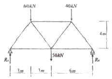
- RA = 60kN, RB = 90kN
- RA = 70kN, RB = 80kN
- RA = 80kN, RB = 70kN
- RA = 100kN, RB = 50kN
(정답률: 58%)
46. 그림과 같은 구조물에 작용되는 4개의 힘이 평형을 이룰 때 F의 크기 및 거리 x는?
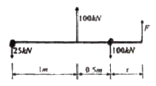
- F=25kN, x=1m
- F=50kN, x=1m
- F=25kN, x=0.5m
- F=50kN, x=0.5m
(정답률: 72%)
47. 지진에 대응하는 기술 중 하나인 제진(制震)에 대한 설명으로 옳지 않은 것은?
- 기존 건물의 구조형식에 좌우되지 않는다.
- 지반계수에 의한 제약을 받지 않는다.
- 소형 건물에 일반적으로 많이 적용된다.
- 댐퍼 등을 사용하여 흔들림을 효과적으로 제어한다.
(정답률: 70%)
48. 강도설계법에 의한 철근콘크리트 보 설계에서 그림과 같은 보의 등가응력블록의 깊이 a값은? (단, fck=21MPa, fy=400MPa이고, D22철근 1개의 단면 387mm2이며 압축철근은 무시한다.)
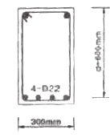
- 85.6mm
- 95.6mm
- 1⑤.6mm
- 115.6mm
(정답률: 46%)
49. 다음은 철근콘크리트 단근 직사각형 균형보의 변형률을 나타낸 것이다. 인장철근비가 균형철근비 보다 작아질 경우에 중립축 이동에 관한 설명 중 가장 적절한 것은?
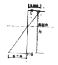
- 압축측으로 이동한다.
- 인장측으로 이동한다.
- 현 위치에서 이동하지 않는다.
- 곧 보의 취성파괴가 발생하여 중립축개념이 없어진다.
(정답률: 48%)
50. 강도설계법에서 다음 띠철근 기둥의 최대설계축하중( )을 구하면? (단, fck=24MPa, fy=400MPa, D22의 1개단면적:387mm, 강도감소계수는 0.7임)
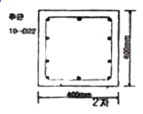
- 2⑤0.5kN
- 2250.5kN
- 2450.5kN
- 2650.5kN
(정답률: 37%)
51. 그림과 같은 부재에 관한 기술로 옳지 않은 것은? (단, 작용하는 전단력은 72kn이다.)(오류 신고가 접수된 문제입니다. 반드시 정답과 해설을 확인하시기 바랍니다.)
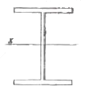
- 최대 휨응력은 플랜지의 바깥면에 생긴다.
- 플랜지의 폭-두께비는 7.69이다.
- 웨브의 폭-두께비는 46.75이다.
- 평균전단응력은 12.5MPa이다.
(정답률: 32%)
52. 그림과 같은 정정 라멘에서 A점에 발생하는 수직 변위를 옳게 나타낸 것은?
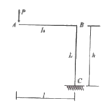
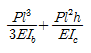
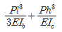
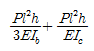
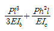
(정답률: 46%)
53. 다음 중 바닥슬래브와 철골보간에 발생하는 전단력에 저항하기 위해 설치하는 것은?
- 커버 플레이트(cover plate)
- 스티프너(stiffener)
- 턴버클(turn buckle)
- 쉐어 커넥터(shear connector)
(정답률: 53%)
54. 고력볼트 F10T-M24의 현장시공을 위한 2차 조임토크 값은 얼마인가? (단, 토크계수는 0.13, F10T-M24볼트의 설계볼트장력은 233kN이며 표준 볼트장력은 설계볼트장력에 10%를 할증한다.)
- 568,573 N∙m
- 799,656 N∙m
- 1,238,406 N∙m
- 1,689,654 N∙m
(정답률: 40%)
55. 보와 기둥의 용접접합시 용접에 알맞게 웨브로부터 잘라낸 반원형 또는 타원형 모양의 부분을 무엇이라 하는가?
- 엔드탭
- 뒷댐재
- 스캘럽
- 래티스
(정답률: 59%)
56. 다음 중 철골구조의 한계상태설계법과 관련 없는 것은?
- 안전계수(safety factor)
- 하중계수(load factor)
- 설계강도(design strength)
- 저항계수(resistance factor)
(정답률: 58%)
57. 그림과 같이 양단이 회전단인 부재의 좌굴축에 대한 세장비는?
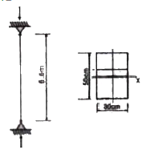
- 76.21
- 84.28
- 94.64
- 103.77
(정답률: 52%)
58. 다음 중 조립식구조의 특성으로 옳지 않은 것은?
- 공장생산이 가능하며 대량생산이 가능하다.
- 각 부품과의 접합부가 일체가 되어 절점을 강접합으로 하기가 용이하다.
- 기계화 시공으로 단기완성이 가능하다.
- 현장 거푸집공사가 절약되어 정밀도가 높고 강도가 큰 콘크리트 부재를 사용할 수 있다.
(정답률: 57%)
59. 강재의 응력-변형도 시험에서 인장력을 가해 소성 상태에 들어선 강재를 다시 반대 방향으로 압축력을 작용하였을때의 압축항복점이 소성상태에 들어서지 않은 강재의 압축항복점에 비해 낮은 것을 볼 수 있는데 이러한 현상을 무엇이라 하는가?
- 루더선(Luder's line)
- 바우슁거효과(Baushinger's effect)
- 소성흐름(Plastic flow)
- 응력집중(Stress concentration)
(정답률: 68%)
60. 다음 중 철골조 주각부분에 사용하는 보강재에 해당되지 않는 것은?
- 윙플레이트
- 데크플레이트
- 사이드앵글
- 클립앵글
(정답률: 63%)
4과목: 건축설비
61. 급탕설비에 관한 설명 중 옳지 않은 것은?
- 급탕 보일러에서 팽창관의 도중에는 밸브를 설치해서는 안된다.
- 온수보일러에 의한 직접 가열방식은 가열식 저장 탱크에 의한 간접 가열방식보다 보일러가 부식되기 쉽다.
- 팽창관의 개구높이는 펌프의 양정만큼 고가수조보다 반드시 높게 해야한다.
- 저탕탱크의 설계에 있어서 가열능력을 크게 취하면 저탕량을 적게 할 수 있다.
(정답률: 51%)
62. 다음의 열펌프(heat pump)에 대한 설명 중( )안에 알맞은 용어는?
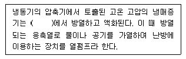
- 응축기
- 팽창밸브
- 압축기
- 증발기
(정답률: 64%)
63. 다음과 가장 관계가 깊은 것은?
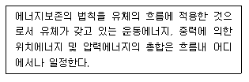
- 뉴턴의 점성법칙
- 베르누이의 정리
- 오일러의 상태방정식
- 보일-샤를의 법칙
(정답률: 79%)
64. 다음 중 트랩의 봉수파괴 원인과 가장 거리가 먼 것은?
- 자정(自淨)작용
- 모세관현상
- 자기사이폰작용
- 증발현상
(정답률: 62%)
65. 자동화재 탐지설비 중 감지기를 검출원리에 따라 분류할 경우 이에 속하지 않는 것은?
- 열식
- 연기식
- 광전식
- 불꽃감지식
(정답률: 53%)
66. 폭 7m, 길이 10m, 천장 높이 3.5m인 어느 교실의 양간 평균조도가 100 lx가 되려면 필요한 형광등의 개수는? (단, 사용되는 형광등 1개당의 광속은 2000lm, 조명율 50%, 감광보상률 1.5 이다.)
- 5개
- 11개
- 16개
- 23개
(정답률: 56%)
67. 가스설비에 관한 설명 중 옳지 않은것은?
- 가스 계량기는 동파의 위험이 있으므로 옥내에 설치하는 것을 원칙으로 한다.
- 가스 계량기는 전기 개폐기에서 60cm이상 떨어진 위치에 설치한다.
- 가스 배관은 건물의 주요 구조부를 관통하지 않도록 한다.
- 가스 배관 도중에 신축 흡수를 위한 이음을 한다.
(정답률: 54%)
68. 35℃의 옥외 공기 300m3/h와 27℃의 실내 공기 700m3/h를 혼합하였을 경우 혼합공기의 온도는?
- 28.2℃
- 29.4℃
- 30.6℃
- 32.6℃
(정답률: 72%)
69. 저압옥내 배선공사 중 콘크리트속에 직접 묻을 수 있는 공사는?
- 금속 몰드 공사
- 금속 덕트공사
- 버스 덕트공사
- 금속관 공사
(정답률: 69%)
70. 다음 보일러의 종류 중 지역난방에 적용하기에 가장 적합한 것은?
- 수관보일러
- 관류보일러
- 입형보일러
- 진공온수기
(정답률: 59%)
71. 유체를 일정한 방향으로만 흐르게 하고 역류를 방지하는데 사용되는 밸브는?
- 체크 밸브
- 버터 플라이 밸브
- 케이트 밸브
- 글로브 밸브
(정답률: 77%)
72. 다음 중 실내를 부압으로 유지하며 실내의 냄새나 유해물질을 다른 실로 흘려 보내지 않으므로 주방, 화장실, 유해가스 발생장소 등에 사용되는 환기방식은?
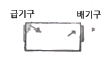
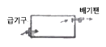
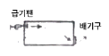
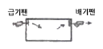
(정답률: 70%)
73. 변압기의 1차측 코일의 권수가 6000, 2차측 코일의 권수가 200일 때 1차측 코일에 교류전압 3000[V]인가시 2차측 코일에 발생하는 교류접압 [V]은?
- 500
- 200
- 100
- 50
(정답률: 71%)
74. 엘리베이터의 안전장치와 가장 관계가 먼 것은?
- 권상기
- 조속기
- 완충기
- 리미트 스위치
(정답률: 58%)
75. 다음의 공기조화방식에 대한 설명 중 옳은 것은?
- 전공기방식은 중간기에 외기냉방은 불가능하나, 다른방식에 비해 열매의 반송동력이 적게 든다.
- 공기·수방식은 각 실의 온도제어는 곤란하나, 관리 측면에서 유리하다.
- 전수방식은 실내공기가 오염되기 쉬우나 개별제어, 개별운전이 가능한 장점이 있다.
- 전공기방식의 종류에는 단일덕트방식, 팬코일 유닛방식 등이 있다.
(정답률: 61%)
76. 다음 중 비상콘센트설비에 대한 설명으로 옳지 않은 것은?(오류 신고가 접수된 문제입니다. 반드시 정답과 해설을 확인하시기 바랍니다.)
- 소방시설 중 화재를 진압하거나 인명구조활동을 위하여 사용하는 소화활동설비에 속한다.
- 건축법상 6층 이상의 층을 설치대상으로 한다.
- 전원회로는 각층에 있어서 2이상이 되도록 설치하는 것을 원칙으로 한다.
- 바닥으로부터 높이 1m이상 1.5m이하의 위치에 설치한다.
(정답률: 54%)
77. 공기조화설비에서 사용되는 고속덕트의 특징으로 옳은 것은?
- 소음 및 진동이 발생하지 않는다.
- 덕트설치 공간을 적게 할 수 있다.
- 공장이나 창고에는 사용할 수 없다.
- 공기혼합 상자가 필요하다.
(정답률: 50%)
78. 급탕배관에 대한 설명 중 옳지 않은 것은?
- 배관재로 동관을 사용하는 경우 관내유속을 느리게 하면 부식되기 쉬우므로 2.0m/s이상으로 하는 것이 바람직하다.
- 역구배나 공기 정체가 일어나기 쉬운 배관 등 탕수(湯水)의 순환을 방해하는 것은 피한다.
- 관의 신축을 고려하여 굽힘 부분에는 스위블 이음으로 접합한다.
- 관의 신축을 고려하여 건물의 벽관통부분의 배관에는 슬리브를 사용한다.
(정답률: 55%)
79. 다음 설명에 알맞은 요운전원 엘리베이터 조작 방식은?
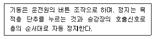
- 카 스위치 방식
- 레코드 컨트롤 방식
- 전자동군관리방식
- 시그널 컨트롤 방식
(정답률: 52%)
80. 다음의 일사조절에 대한 설명 중 옳지 않은것은?
- 일사에 의한 건물의 수열은 방위에 따라 상당한 차이가 있다.
- 추녀와 차양은 창면에서의 일사조절 방법으로 사용된다.
- 블라인드, 루버, 롤스크린은 계절이나 시간, 실내의 사용상황에 따라 일사를 조절할 수 있다.
- 일사조절의 목적은 일사에 의한 건물의 수열이나 흡열을 작게 하여 동계의 실내 기후의 악화를 방지하는데 있다.
(정답률: 68%)
5과목: 건축법규
81. 공동주택과 오피스텔의 난방설비를 개별난방방식으로 하는 경우의 기준 내용으로 옳지 않은 것은?
- 보일러실의 윗부분에는 그 면적이 0.5m2이상인 환기창을 설치할 것
- 기름보일러를 설치하는 경우에는 기름저장소를 보일러실 외의 다른 곳에 설치할 것
- 오피스텔의 경우에는 난방구획마다 내화구조로 된 벽, 바닥과 갑종방화문으로 된 출입문으로 구획할 것
- 보일러를 설치하는 곳과 거실 사이의 경계벽은 출입구를 제외하고는 방화구조의 벽으로 구획할 것
(정답률: 41%)
82. 다음 도면과 같은 경우 건축법상 건축물의 높이는?
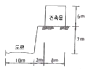
- 6m
- 9m
- 9.5m
- 13m
(정답률: 82%)
83. 다음 중 노외주차장의 출구 및 입구를 설치할 수 있는 곳은?
- 횡단보도에서 5m이내의 도로의 부분
- 장애인복지시설의 출입구로부터 20m 이내의 도로의 부분
- 중학교의 출입구로부터 20m 이내의 도로의 부분
- 종단 구배가 10%를 초과하는 도로
(정답률: 56%)
84. 용도지역의 세분에 있어 주거기능을 위주로 이를 지원하는 일부 상업기능 및 업무기능을 보완하기 위하여 필요한 지역은?
- 전용주거지역
- 준주거지역
- 일반주거지역
- 유통상업지역
(정답률: 76%)
85. 건축물의 관람석 또는 집회실로부터 바깥쪽으로의 출구로 쓰이는 문을 안여닫이로 하여서는 안되는 건축물은?
- 위락시설
- 전시장
- 동·식물원
- 청소년 수련관
(정답률: 57%)
86. 다음 중 주요 구조부에 속하지 않는 것은?
- 기둥
- 지붕틀
- 바닥
- 옥외계단
(정답률: 70%)
87. 다음 중 특별시장 또는 광역시장의 건축허가를 받지 않아도 되는 것은?
- 층수가 25층인 사무소
- 연면적이 300,000m2인 공장
- 연면적이 200,000m2인 호텔
- 연면적이 100,000m2인 병원
(정답률: 53%)
88. 일반주거지역 안에서 건축물을 건축할 경우 건축물의 높이 4미터 이하인 부분은 정북 방향의 인접대지 경계선으로부터 원칙적으로 최소 얼마 이상 거리를 띄어야 하는가?(오류 신고가 접수된 문제입니다. 반드시 정답과 해설을 확인하시기 바랍니다.)
- 2 m
- 2.5m
- 1m
- 1.5m
(정답률: 52%)
89. 국토의 계획 및 이용에 관한 법률상 용도지구에 포함되지 않는 것은?
- 특정용도제한지구
- 보존지구
- 취락지구
- 시설용지지구
(정답률: 52%)
90. 다음 중 증축에 속하는 것은?
- 부속건축물만 있는 대지에서 높이를 증가시키는 것
- 기존 건축물이 있는 대지에서 높이를 증가시키는 것
- 기존 건축물이 멸실된 대지위에 건축물을 축조하는 것
- 건축물의 주요구조부를 해체하지 아니하고 같은 대지의 다른 위치로 옳기는 것
(정답률: 72%)
91. 노상주차장의 설비기준에 관한 내용 중 옳지 않은 것은?
- 종단경사도가 4%를 초과하는 도로에 설치하여서는 아니된다.
- 주차대수 20대 마다 장애인전용주차구획을 1면씩 확보하여야 한다.
- 너비 6m미만의 도로에 설치하여서는 아니된다.
- 고가도로에 설치하여서는 아니된다.
(정답률: 54%)
92. 건축물의 출입구에 설치하는 회전문의 설치기준으로 옳지 않은 것은?
- 계단이나 에스켈레이터로부터 2미터 이상의 거리를 둘 것
- 회전문의 회전속도는 분당회전수가 15회를 넘지 아니하도록 할 것
- 출입에 지장이 없도록 일정한 방향으로 회전하는 구조로 할 것
- 회전문의 중심축에서 회전문과 문틀 사이의 간격을 포함한 회전문 날개 끝부분까지의 길이는 140센티미터이상이 되도록 할 것
(정답률: 67%)
93. 시설물의 내부 또는 그 부지안에 부설주차장을 설치하여야 하는 대상 시설물임에도 불구하고 시설물의 부지인근에 단독 또는 공동으로 부설주차장을 설치할 수 있는 부설 주차장의 규모 기준은?
- 주차대수 200대 이하
- 주차대수 300대 이하
- 주차대수 400대 이하
- 주차대수 500대 이하
(정답률: 70%)
94. 대지면적이 600m2일 때 옥상에 조경면적을 60m2 설치할 경우 대지에 설치하여야 하는 최소 조경 면적은? (단, 조경설치기준은 대지면적의 10%)
- 10m2
- 15m2
- 20m2
- 30m2
(정답률: 68%)
95. 연면적의 합계가 2,000m이상인 건축물의 대지와 도로의 관계가 옳은 것은?
- 대지는 너비 4m 이상인 도로에 2m이상 접하여야 한다.
- 대지는 너비 4m이상인 도로에 4m이상 접하여야 한다.
- 대지는 너비 6m 이상인 도로에 2m이상 접하여야 한다.
- 대지는 너비 6m 이상인 도로에 4m이상 접하여야 한다.
(정답률: 72%)
96. 다음의 피난계단의 설치와 관련된 기준 내용 중( )안에 알맞은 것은?
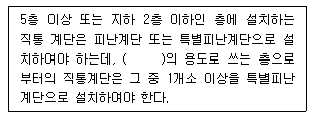
- 의료시설
- 교육연구시설
- 숙박시설
- 판매시설
(정답률: 57%)
97. 공사감리자가 공사시공자에게 상세시공도면을 작성하도록 요청할 수 있는 건축공사의 규모 기준은?
- 각층 바닥면적의 합계가 5000m2 이상인 건축공사
- 각층 바닥면적의 합계가 10000m2이상인 건축공사
- 연면적의 합계가 5000m2이상인 건축공사
- 연면적의 합계가 10000m2이상인 건축공사
(정답률: 59%)
98. 원본 불량으로 문제를 복원하지 못하였습니다. 여기서는 1번을 누르면 정답 처리 됩니다. 정확한 문제 내용을 아시는분께서는 오류 신고 기능을 이용하여 내용 작성 부탁 드립니다.
- 복원중
- 복원중
- 복원중
- 복원중
(정답률: 67%)
99. 원본 불량으로 문제를 복원하지 못하였습니다. 여기서는 1번을 누르면 정답 처리 됩니다. 정확한 문제 내용을 아시는분께서는 오류 신고 기능을 이용하여 내용 작성 부탁 드립니다.
- 복원중
- 복원중
- 복원중
- 복원중
(정답률: 68%)
100. 원본 불량으로 문제를 복원하지 못하였습니다. 여기서는 1번을 누르면 정답 처리 됩니다. 정확한 문제 내용을 아시는분께서는 오류 신고 기능을 이용하여 내용 작성 부탁 드립니다.
- 복원중
- 복원중
- 복원중
- 복원중
(정답률: 61%)